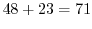

Next: sine wave synth Up: Composition 000 Previous: Synopsis
[metro]. When a value of 1 appears on the left inlet of a metronome it switches on and begins to emit bangs. It will turn off again uopn recieving a 0 value. The right inlet of [metro] sets the speed, or rather the period which is in milliseconds. A toggle switch outputs a 1 or 0, so we can start and stop the [metro 300] unit. When started it outputs bang messages at a rate somewhat above 3 per second. This is the most simple timebase, just a regular stream of bang messages.
[random 24] causes it to choose a new random integer number of 24 possible random values, in the range 0 to 23. We add this to a fixed value in [+ 48] so that the minimum value is 48, and the maximum value will be
. If you attach a number box you will see the number changing to show a different float message is on the wire. On a musical keyboard there are about 88 notes, two octaves of which covers 24 keys, so this seems like a good pitch range for melodies, starting on C3 and ending on B4.
[osc~] produces an audio signal. The left inlet
of [osc~] sets its frequency in Hz or cycles per second. Both sides of
the [dac~] are fed from the same [osc~] outlet so we get to hear both speakers on
a stereo sound system. The patch plays loudly and low,
so watch your bass bins. It doesn't produce the correct range of frequency. A range of 48Hz to 71Hz is right
down in the bottom, so we must scale it for MIDI note values to produce the right frequencies.
A-random-note-play.pd A-random-note-play.ogg Andy Farnell